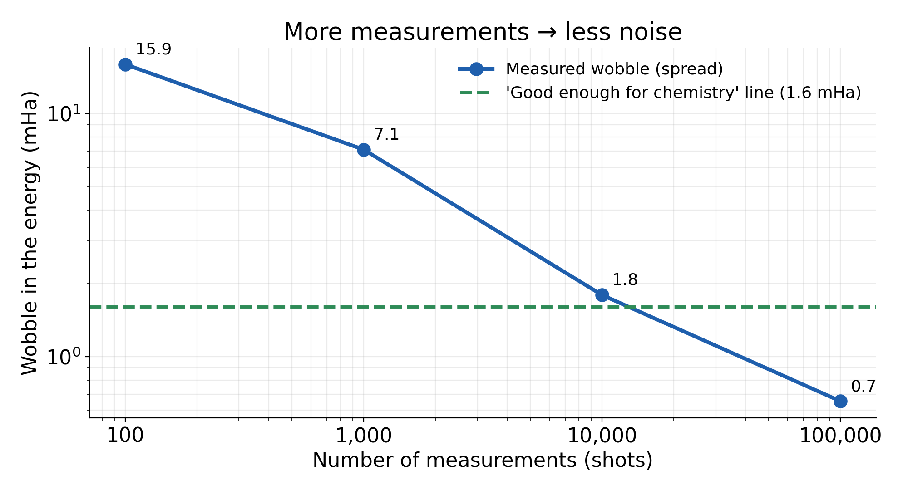

Every molecule settles into its lowest possible energy, called the ground-state energy. That number tells chemists how strongly atoms hold together, what shape a molecule takes and how it reacts. The catch is that computing it exactly gets very expensive very fast: every extra orbital (a "seat" an electron can sit in) roughly doubles the work for an ordinary computer. Quantum computers are interesting here because qubits behave by the same quantum rules as electrons.
We studied the simplest molecule, hydrogen (H₂): two protons and two electrons. It is small enough that we can also get the exact answer on a laptop, so we can check whether the quantum method really works. Our goal was to find the ground-state energy with the Variational Quantum Eigensolver (VQE) and prove it is correct.
The big idea of VQE. Think of a radio with a few knobs. A quantum circuit with adjustable angles (the knobs) prepares a guess for the electrons' state, and the quantum computer measures that guess's energy. A normal computer then turns the knobs to make the energy lower, and the loop repeats. A rule of quantum physics (the variational principle) promises that a guess can never go below the true ground-state energy, so the lowest energy we reach is our best answer.
We placed the two H atoms 0.735 Å apart (close to H₂'s natural bond length) and used the smallest standard set of orbitals, called STO-3G: one orbital per atom. PySCF then runs the classic Hartree–Fock method, a fast approximation that treats each electron as feeling only the average push of the other. Hartree–Fock gives −1.116999 Ha. It is our starting point, but it misses how the electrons actively dodge each other (called correlation).
Two orbitals, each holding a spin-up or spin-down electron, gives 4 "seats" for electrons. With the Jordan–Wigner mapping, each seat becomes one qubit (1 = seat filled, 0 = empty). The energy rules (the Hamiltonian) became a sum of 15 simple qubit terms on 4 qubits.
Before trusting a quantum result we needed the right answer. We computed it three independent ways (Qiskit's exact solver, plain NumPy on the 16×16 matrix, and PySCF's exact "FCI" method, which does not use qubits at all). All three gave −1.1373060358 Ha. So Hartree–Fock is off by 20.3 mHa, more than 12 times the chemical-accuracy limit. VQE has to recover that missing 20.3 mHa.
We start the circuit in the Hartree–Fock state (two X gates put both electrons in the low-energy "bonding" orbital: |0101⟩). Then we add three "knobs" taken from chemistry, the UCCSD ansatz: two knobs move one electron up to the higher orbital, and one knob moves both electrons up together. We picked UCCSD over a generic "hardware-efficient" circuit because it needs only 3 parameters and every knob has a clear physical meaning. On real hardware this circuit compiles to 56 CNOT gates. We checked the circuit two ways: with all knobs at zero it gives exactly the Hartree–Fock energy, and it matches Qiskit Nature's built-in UCCSD to within 10⁻¹⁴ Ha.
We first ran VQE with perfect (noise-free) energy measurements and three classical optimizers
(SLSQP, L-BFGS-B, COBYLA), all starting from Hartree–Fock. Then we made it realistic: a real quantum
computer only gives random 0/1 results, so each energy is an average over many repeated runs
("shots"). We simulated that with Qiskit's BackendEstimatorV2 on the Aer simulator,
which samples real measurement outcomes. Finally we repeated the whole calculation for 25 bond lengths
(0.3 to 3.0 Å) to see what happens when the molecule is pulled apart.
| What we measured | Result |
|---|---|
| Hartree–Fock energy (old method) | −1.116999 Ha |
| Exact energy (3 methods agree) | −1.137306 Ha |
| VQE energy, noise-free | −1.137306 Ha (error ≈ 10⁻¹¹ mHa) |
| Share of the missing 20.3 mHa recovered by VQE | 100% |
| Overlap of VQE state with the exact state (fidelity) | 1.0000000000 |
| Energy measurements needed: SLSQP / L-BFGS-B / COBYLA | 10 / 20 / 87 |
What VQE found. The best knob settings were 0, 0 and −0.112 rad: the two "one electron jumps" knobs were not needed at all, and only the "both jump together" knob mattered. This agrees with a known chemistry rule (Brillouin's theorem). The final state is 98.76% "both electrons in the bonding orbital" and 1.24% "both electrons in the higher orbital". That small 1.24% is exactly the electron dodging that Hartree–Fock leaves out, and it is worth the full 20.3 mHa.
Shot noise. Measuring the energy 30 times at the best settings, the spread was 15.9, 7.1, 1.8 and 0.65 mHa for 100, 1,000, 10,000 and 100,000 shots. The noise shrinks like 1/√(shots): to be 10 times more precise you need 100 times more shots. To land inside chemical accuracy reliably we needed around 10⁴–10⁵ shots per measurement group.


Which optimizer survives noise? With 10,000 shots and 3 runs each (Fig. 3), SLSQP failed badly (errors of 401–802 mHa, worse than Hartree–Fock). COBYLA got close (0.86–3.13 mHa; one of three runs missed chemical accuracy). SPSA, which is designed for noisy measurements, was best every time (0.013–0.053 mHa), at the cost of about 10 million shots per run.
Pulling the molecule apart. Across all 25 bond lengths, the largest VQE error was 3×10⁻⁸ mHa. The Hartree–Fock error grew from about 8 mHa to 278 mHa at 3.0 Å (Fig. 2). The reason: when the bond breaks, the true state becomes a 50/50 mix of the two arrangements, and our knob θ₂ moved steadily towards −π/4 (the 50/50 setting). Hartree–Fock can only describe one arrangement, so it fails. The lowest point of our curve is at 0.75 Å, close to the measured 0.741 Å.
requirements.txt.UCCSD and
HartreeFock classes are built on parts that Qiskit 2.x has deprecated. We built the same
circuit ourselves from PauliEvolutionGates and proved it matches the library version.EstimatorV2. Reading its source code, we found it only adds a bell-curve random number
to the exact answer, and with a fixed seed it adds the same number every time. We switched to
BackendEstimatorV2, which really samples measurement results.The STO-3G orbital set is very small, so even the exact answer in it is not the experimental energy (our bond-energy estimate is 5.5 eV versus about 4.75 eV measured). We simulated shot noise only, not gate errors of a real device; with 56 CNOTs, real hardware would need error mitigation. And H₂ is easy for a laptop, so this is a proof that the method works, not a quantum speed-up. Next steps would be reducing the number of qubits with symmetries, adding a device noise model, and trying a larger molecule such as LiH.
Following the hackathon AI policy ("use AI freely, own every line"), we used Claude (Anthropic), through
Claude Code in VS Code, as a coding assistant. It helped us set up the environment, write and debug the
notebook code, make the plots, explain concepts, and draft this report and our slides. We set the rules it
had to follow: test every Qiskit function in our own environment before using it, check every quantum
result against an exact classical answer, and log all AI help in AI_Usage.md in our repository.
Several problems in Section 4 were found this way (for example the Aer noise model and the Qiskit version
crash). We chose the challenge and level, directed each step, asked for changes (for example the code-only
notebook for qBraid), re-ran the notebook ourselves, and reviewed the code and results. We take full
responsibility for every line and every claim in this submission.